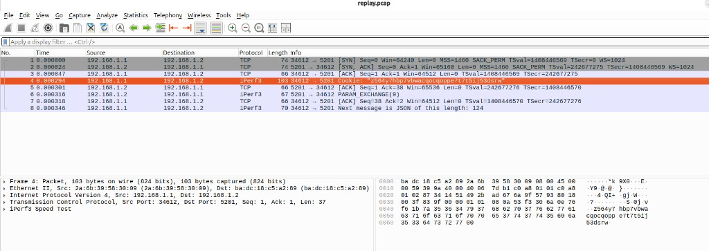

DPI-C + libpcap
Offline replay with wire length, timestamps, and DLT. FILTER= compiles BPF and reports match versus skip counts.
Open-source verification
Stream a captured .pcap
into Verilator through DPI-C. Hardware under test sees the same Ethernet frames a NIC would,
on an AXI-Stream bus, with simulation time frozen for debug.
Use it when an FPGA or ASIC packet pipeline needs real traffic before a live port exists. Classification, DPI, RoCE-aware paths, and RSS can be gated on traces you already captured.
Offline replay with wire length, timestamps, and DLT. FILTER= compiles BPF and reports match versus skip counts.
tdata, tkeep, tvalid, tready, tstart, tlast. Default 8 bits per cycle; AXIS_W=64 packs eight bytes. BP=1 or random BP=2.
RSS Toeplitz hash on tuser and IPv4 header checksum are computed in C and checked in SystemVerilog. Gate mis=0.
Handshake HS_DONE, then payload length from IHL and data offset. SYN/FIN consume one. In-order data is SEQ_OK.
UDP/4791 BTH, PSN tracker, and ICRC on the last four bytes of a complete frame. Truncated captures are skipped, not failed.
EtherType 0x0806 is classified as ARP. UDP dest 4789 walks the overlay to the inner Ethernet type and VNI.
Sources sit under hdl/ and dpi/. Traces stay on the machine that runs the sim (gitignored).
Each block is isolated. A change in RSS does not require touching the RoCE tracker.
| Module | Role |
|---|---|
| pkt_size_filter | Runt / standard / jumbo from tkeep popcount |
| pkt_header_parser | L2–L4, TCP flags, RoCE BTH, ARP, VXLAN |
| pkt_tcp_tracker | SYN / SYN-ACK / HS_DONE / next-seq / FIN / RST |
| pkt_roce_tracker | PSN, MSG_DONE, reverse ACK_OK, PSN_GAP |
| pkt_roce_icrc | Masked CRC32 vs last 4 bytes |
| pkt_rss | Microsoft Toeplitz 4-tuple; queue = hash % 4 |
| pkt_ip_csum | RFC 1071 IPv4 header checksum vs DPI-C |

DUMP=replay.pcap open as Ethernet in Wireshark.Ubuntu is the reference environment. GTKWave is optional (make wave).
sudo apt install build-essential libpcap-dev git clone https://github.com/khademullah/Pcap2HDL.git cd Pcap2HDL make MAX_PACKETS=8
python3 scripts/gen_pcap.py ci.pcap make PCAP=ci.pcap MAX_PACKETS=8 BP=2 make FILTER='tcp port 5201' make PCAP=soft_roce.pcap MAX_PACKETS=8
Compact TCP handshake gate: ipv4=8 tcp=8 hs=1 seq_ok=5, RSS and checksum mis=0.
Synthetic CI capture: arp=1 vxlan=1, streamed 4.
Aimed at digital design, verification, and network-hardware engineers. Parked first PRs: IPv6 and 802.1Q VLAN. Stretch work (checksum, ARP/VXLAN, random backpressure, CI) is already in tree.